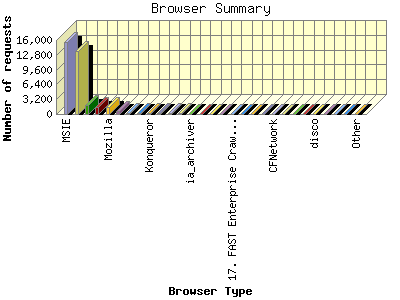
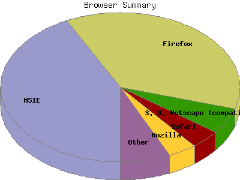

Report generated by Analog 6.0 and Report Magic 2.21
|
Web Server Statistics for "Harish Narayanan (hnarayan) - September 2007" Report generated by Analog 6.0 and Report Magic 2.21 |
The Browser Summary identifies the most popular web browsers used to visit
this site.
Browsers are broken down by recognized categories such as
Netscape Navigator/Communicator, Microsoft Internet Explorer, WebTV, Opera
and the like. Within each category is also a subgroup by version number
such as 'MSIE 5.0' or 'Netscape 4.5'.
This report shows all results. This report is sorted by number of requests.


| Browser Type | Number of requests | Number of bytes transferred | Percentage of the bytes | Percentage of the requests | |
|---|---|---|---|---|---|
| 1. | MSIE | 15,540 | 444.617 MB | 39.12% | 42.63% |
| MSIE/6 | 8,124 | 243.659 MB | 21.44% | 22.29% | |
| MSIE/7 | 7,323 | 149.052 MB | 13.12% | 20.09% | |
| MSIE/5 | 93 | 51.906 MB | 4.57% | 0.26% | |
| 2. | Firefox | 13,528 | 232.175 MB | 20.43% | 37.11% |
| Firefox/2 | 12,357 | 193.990 MB | 17.07% | 33.90% | |
| Firefox/1 | 1,171 | 38.184 MB | 3.36% | 3.21% | |
| 3. | Netscape (compatible) | 2,019 | 208.118 MB | 18.31% | 5.54% |
| 4. | Safari | 1,484 | 25.812 MB | 2.27% | 4.07% |
| Safari/522 | 609 | 11.949 MB | 1.05% | 1.67% | |
| Safari/419 | 537 | 10.266 MB | 0.90% | 1.47% | |
| Safari/312 | 238 | 2.532 MB | 0.22% | 0.65% | |
| 5. | Mozilla | 1,408 | 10.733 MB | 0.94% | 3.86% |
| Mozilla/1 | 1,075 | 6.528 MB | 0.57% | 2.95% | |
| 6. | Opera | 733 | 12.569 MB | 1.11% | 2.01% |
| Opera/9 | 710 | 10.710 MB | 0.94% | 1.95% | |
| Opera/8 | 22 | 383.205 KB | 0.03% | 0.06% | |
| 7. | Wget | 269 | 2.880 MB | 0.25% | 0.74% |
| Wget/1 | 269 | 2.880 MB | 0.25% | 0.74% | |
| 8. | msnbot | 249 | 129.553 MB | 11.40% | 0.68% |
| msnbot/1 | 249 | 129.553 MB | 11.40% | 0.68% | |
| 9. | Konqueror | 245 | 2.335 MB | 0.20% | 0.67% |
| Konqueror/3 | 245 | 2.335 MB | 0.20% | 0.67% | |
| 10. | Netscape | 218 | 3.470 MB | 0.30% | 0.60% |
| Netscape/4 | 183 | 2.741 MB | 0.24% | 0.50% | |
| Netscape/7 | 34 | 469.477 KB | 0.04% | 0.09% | |
| 11. | msnbot-media | 121 | 10.374 MB | 0.91% | 0.33% |
| msnbot-media/1 | 121 | 10.374 MB | 0.91% | 0.33% | |
| 12. | Camino | 113 | 1,021.206 KB | 0.09% | 0.31% |
| Camino/1 | 113 | 1,021.206 KB | 0.09% | 0.31% | |
| 13. | ia_archiver | 98 | 268.666 KB | 0.02% | 0.27% |
| 14. | psbot | 97 | 1.905 MB | 0.17% | 0.27% |
| psbot/0 | 97 | 1.905 MB | 0.17% | 0.27% | |
| 15. | Yeti | 53 | 665.751 KB | 0.06% | 0.14% |
| Yeti/0 | 53 | 665.751 KB | 0.06% | 0.14% | |
| 16. | User-Agent: Mozilla | 46 | 348.259 KB | 0.03% | 0.13% |
| User-Agent: Mozilla/2 | 46 | 348.259 KB | 0.03% | 0.13% | |
| 17. | FAST Enterprise Crawler 6 used by Singapore Press Holdings (crawler@sphsearch.sg) | 44 | 38.966 MB | 3.43% | 0.12% |
| 18. | Ocelli | 42 | 261.742 KB | 0.02% | 0.12% |
| Ocelli/1 | 42 | 261.742 KB | 0.02% | 0.12% | |
| 19. | Jyxobot | 26 | 1.105 MB | 0.10% | 0.07% |
| Jyxobot/1 | 26 | 1.105 MB | 0.10% | 0.07% | |
| 20. | MOT-V3i | 24 | 1.212 MB | 0.11% | 0.07% |
| MOT-V3i/08 | 24 | 1.212 MB | 0.11% | 0.07% | |
| 21. | CFNetwork | 9 | 30.274 KB | 0.00% | 0.03% |
| 22. | larbin_2.6.3 larbin2.6.3@unspecified.mail | 8 | 133.512 KB | 0.01% | 0.02% |
| 23. | Googlebot-Video | 7 | 4.826 MB | 0.42% | 0.02% |
| 24. | SiteBar | 6 | 3.217 KB | 0.00% | 0.02% |
| 25. | disco | 5 | 53.704 KB | 0.01% | 0.01% |
| disco/Nutch-0 | 3 | 39.026 KB | 0.00% | 0.01% | |
| disco/Nutch-1 | 2 | 14.678 KB | 0.00% | 0.01% | |
| 26. | W3C_Validator | 5 | 48.131 KB | 0.00% | 0.01% |
| W3C_Validator/1 | 5 | 48.131 KB | 0.00% | 0.01% | |
| 27. | Sogou Push Spider | 4 | 33.233 KB | 0.00% | 0.01% |
| Sogou Push Spider/3 | 4 | 33.233 KB | 0.00% | 0.01% | |
| 28. | Yahoo-MMCrawler | 4 | 49.436 KB | 0.00% | 0.01% |
| 29. | Sogou Orion spider | 4 | 33.233 KB | 0.00% | 0.01% |
| Sogou Orion spider/3 | 4 | 33.233 KB | 0.00% | 0.01% | |
| 30. | Gigabot | 4 | 46.998 KB | 0.00% | 0.01% |
| Gigabot/2 | 3 | 26.243 KB | 0.00% | 0.01% | |
| Gigabot/3 | 1 | 20.755 KB | 0.00% | 0.00% | |
| 31. | MJ12bot | 4 | 27.379 KB | 0.00% | 0.01% |
| MJ12bot/v1 | 4 | 27.379 KB | 0.00% | 0.01% | |
| 32. | Speedy Spider (http: | 4 | 23.837 KB | 0.00% | 0.01% |
| Speedy Spider (http://www | 4 | 23.837 KB | 0.00% | 0.01% | |
| 33. | FAST Enterprise Crawler 6 | 3 | 7.339 KB | 0.00% | 0.01% |
| FAST Enterprise Crawler 6 / | 3 | 7.339 KB | 0.00% | 0.01% | |
| 34. | Python-urllib | 3 | 938.247 KB | 0.08% | 0.01% |
| Python-urllib/2 | 3 | 938.247 KB | 0.08% | 0.01% | |
| 35. | Microsoft Office Protocol Discovery | 2 | 0.000 B | 0.00% | 0.01% |
| 36. | yacybot (amd64 Linux 2.6.20-16-generic; java 1.5.0_11; Europe | 2 | 14.678 KB | 0.00% | 0.01% |
| yacybot (amd64 Linux 2.6.20-16-generic; java 1.5.0_11; Europe/en) | 2 | 14.678 KB | 0.00% | 0.01% | |
| 37. | Spock Crawler (http: | 2 | 1.497 MB | 0.13% | 0.01% |
| Spock Crawler (http://www | 2 | 1.497 MB | 0.13% | 0.01% | |
| 38. | Baiduspider+(+http: | 2 | 3.641 KB | 0.00% | 0.01% |
| Baiduspider+(+http://www | 2 | 3.641 KB | 0.00% | 0.01% | |
| 39. | 7pftsag77mfgltnvKarbvK | 1 | 7.084 KB | 0.00% | 0.00% |
| 40. | w77elbprkwcng7yvoxsorbls7whf | 1 | 7.084 KB | 0.00% | 0.00% |
| 41. | HMSE_Robot | 1 | 7.339 KB | 0.00% | 0.00% |
| 42. | voyager | 1 | 7.339 KB | 0.00% | 0.00% |
| voyager/1 | 1 | 7.339 KB | 0.00% | 0.00% | |
| 43. | Microsoft Office Existence Discovery | 1 | 0.000 B | 0.00% | 0.00% |
| 44. | Jakarta Commons-HttpClient | 1 | 0.000 B | 0.00% | 0.00% |
| Jakarta Commons-HttpClient/3 | 1 | 0.000 B | 0.00% | 0.00% | |
| 45. | great-plains-web-spider | 1 | 1.820 KB | 0.00% | 0.00% |
| great-plains-web-spider/flatlandbot | 1 | 1.820 KB | 0.00% | 0.00% | |
| 46. | nokia6610I | 1 | 1.820 KB | 0.00% | 0.00% |
| nokia6610I/1 | 1 | 1.820 KB | 0.00% | 0.00% | |
| 47. | japs8fmdgscgqqgdvmnfjdgcuaixe8 aicsjo | 1 | 8.633 KB | 0.00% | 0.00% |
| 48. | oc1roi1soehon11jnhgcDelhjix1gsypjar | 1 | 7.084 KB | 0.00% | 0.00% |
| 49. | KiwiStatus (NZS.com) | 1 | 7.339 KB | 0.00% | 0.00% |
| KiwiStatus (NZS.com)/0 | 1 | 7.339 KB | 0.00% | 0.00% | |
| 50. | LWP::Simple | 1 | 1.820 KB | 0.00% | 0.00% |
| LWP::Simple/5 | 1 | 1.820 KB | 0.00% | 0.00% | |
| 51. | Windows-Media-Player | 1 | 285.225 KB | 0.03% | 0.00% |
| 52. | Snapbot | 1 | 67.521 KB | 0.01% | 0.00% |
| Snapbot/1 | 1 | 67.521 KB | 0.01% | 0.00% | |
| 53. | ru ksfklg xmi0skbvnpt0kxjwy hFn | 1 | 8.633 KB | 0.00% | 0.00% |
| 54. | ConveraCrawler | 1 | 0.000 B | 0.00% | 0.00% |
This report was generated on October 30, 2007 16:30.
Report time frame September 1, 2007 00:16 to September 30, 2007 23:55.
| Web statistics report produced by: | |
 Analog 6.0 Analog 6.0 |  Report Magic 2.21 Report Magic 2.21 |